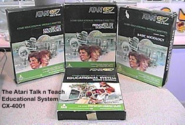

Using a combination of a ROM cartridge and the Atari 410 cassette recorder
with its unique dual channel audio system, the Atari CX-4001 Education
System was a very simple and powerful learning tool. Atari
410 cassette recorders could load program data and play audio at the same
time, allowing a student to listen to instructions or lesson information
while the beginning of a lesson was loaded. Many programs were
made available such as Economics, Sociology, Counseling and so forth.
Other programs which didn't require the CX-4001 Education cartridge were
programs like Conversational French, Spanish, Italian and German as well
as Basic Programming and other programs. Atari had a formula
of hardware and software to make teaching and learning an easy and creative
process.